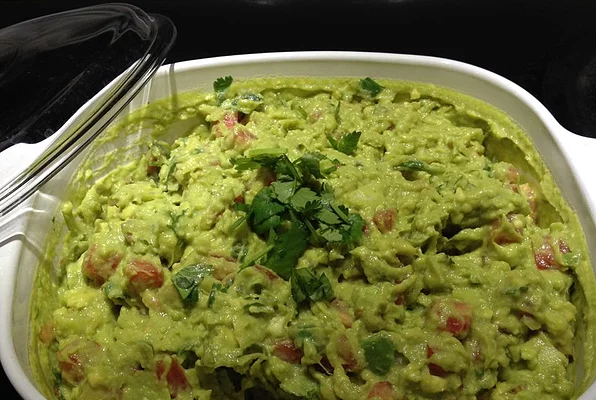

Guacamole

Description
Easy, and delicious guacamole, that you can make in 10 minutes. Original recipe yields 4 servings.
Ingredients
- 3 avocados - peeled, pitted, and mashed
- 1 lime, juiced
- 1 teaspoon salt
- ½ cup diced onion
- 3 tablespoons chopped fresh cilantro
- 2 roma (plum) tomatoes, diced
- 1 teaspoon minced garlic
- 1 pinch ground cayenne pepper (Optional)
Directions
- In a medium bowl, mash together the avocados, lime juice, and salt. Mix in onion, cilantro, tomatoes, and garlic. Stir in cayenne pepper. Refrigerate 1 hour for best flavor, or serve immediately.